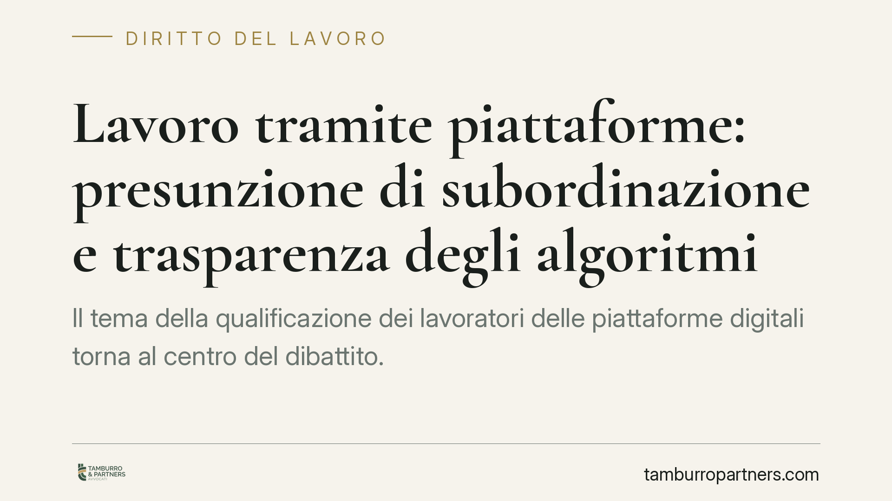

Lavoro tramite piattaforme: presunzione di subordinazione e trasparenza degli algoritmi
Il tema della qualificazione dei lavoratori delle piattaforme digitali torna al centro del dibattito. La Direttiva UE sul lavoro tramite piattaforme, approvata nel 2024, introduce una presunzione legale di subordinazione e obblighi di trasparenza sugli algoritmi. Vediamo cosa prevede la disciplina vigente in Italia e cosa attendersi dal recepimento, per aziende del settore e collaboratori.

Il fatto
Circola la notizia di un intervento normativo che stabilirebbe una presunzione di subordinazione per i lavoratori delle piattaforme digitali, con obblighi di trasparenza algoritmica e supervisione umana sulle decisioni automatizzate.
Una precisazione è doverosa. Alcuni riferimenti diffusi in rete — in particolare un decreto legge del 2026 e una relativa legge di conversione, con data di efficacia fissata al 2 dicembre 2026 — non risultano ad oggi verificabili in Gazzetta Ufficiale né su Normattiva. In assenza di conferma da fonte ufficiale, quegli estremi non possono essere trattati come diritto vigente.
La fonte reale e verificabile del tema esiste ed è di rango europeo: la Direttiva (UE) 2024/2831 sul lavoro mediante piattaforme digitali (Platform Work Directive), pubblicata nel 2024, che gli Stati membri devono recepire nell'ordinamento interno entro i termini fissati dalla stessa direttiva. È attorno a questa fonte che ruotano la presunzione legale e gli obblighi di trasparenza.
Inquadramento normativo
La Direttiva UE 2024/2831 introduce una presunzione legale di rapporto di lavoro: quando emergono elementi di controllo e direzione da parte della piattaforma, il rapporto si presume subordinato, salvo prova contraria a carico della piattaforma stessa. Si tratta di una presunzione probatoria, non di una riqualificazione automatica: sposta l'onere della prova, ma non trasforma ex lege ogni collaboratore in dipendente.
Nell'ordinamento italiano il perimetro attuale si compone di più livelli. L'art. 2094 c.c. definisce il lavoratore subordinato in base all'assoggettamento al potere direttivo del datore. L'art. 2 del D.Lgs. n. 81/2015 estende la disciplina del lavoro subordinato alle collaborazioni etero-organizzate, quando le modalità di esecuzione sono organizzate dal committente anche tramite piattaforme digitali. Gli artt. 47-bis e seguenti del D.Lgs. n. 81/2015 dettano una disciplina specifica per i cosiddetti rider, con tutele minime su compenso, copertura assicurativa e trasparenza.
Sul versante degli algoritmi, il riferimento è l'art. 22 del Regolamento (UE) 2016/679 (GDPR). La norma non pone un divieto assoluto di decisioni automatizzate: riconosce all'interessato il diritto a non essere sottoposto a una decisione basata unicamente su un trattamento automatizzato che produca effetti giuridici o incida in modo analogo, salvo eccezioni (esecuzione del contratto, consenso, previsione di legge). Restano ferme garanzie come l'intervento umano e la contestabilità della decisione.
Implicazioni pratiche
Per le piattaforme, il baricentro si sposta sull'onere probatorio. Con una presunzione di subordinazione, spetta all'azienda dimostrare l'effettiva autonomia del collaboratore. Cambia anche il perimetro della gestione algoritmica: assegnazione degli incarichi, valutazioni, sospensioni e disattivazioni degli account rientrano tra le decisioni che possono richiedere trasparenza e supervisione umana.
Per i collaboratori, la posizione processuale si rafforza: contestare la natura del rapporto diventa meno oneroso in termini di prova, e cresce il diritto a comprendere le logiche delle decisioni automatizzate che li riguardano.
Resta però centrale la distinzione già evidenziata: presunzione non significa conversione automatica. L'esito dipende dagli elementi concreti del rapporto e dalla prova offerta in giudizio.
Cosa fare in concreto
- Verificare la fonte prima di agire. Non assumere come vigente il decreto del 2026 finché non risulti pubblicato in Gazzetta Ufficiale; monitorare invece i lavori di recepimento della Direttiva UE 2024/2831.
- Mappare i rapporti in essere. Ricostruire, per ciascuna tipologia di collaborazione, gli indici di etero-organizzazione ex art. 2 D.Lgs. 81/2015 e la disciplina rider degli artt. 47-bis e ss.
- Documentare la logica degli algoritmi. Predisporre una descrizione chiara delle decisioni automatizzate e dei relativi criteri, in linea con l'art. 22 GDPR e con gli obblighi informativi.
- Prevedere la supervisione umana. Individuare i punti in cui una decisione automatizzata incide in modo significativo sul lavoratore e garantire riesame umano e contestabilità.
- Aggiornare l'assetto contrattuale e organizzativo man mano che il recepimento nazionale prenderà forma, senza anticipare adempimenti su norme non ancora vigenti.
È opportuno rivedere per tempo modelli contrattuali, processi di gestione algoritmica e stime dei costi contributivi, tenendo distinti gli obblighi già in vigore da quelli attesi con il recepimento.
---
Contributo informativo a cura di Tamburro & Partners - Avv. Giuseppe Tamburro. Non costituisce parere legale.
Ogni storia di lavoro ha i suoi tempi.
Se gestisci HR e vuoi un confronto su contenzioso, ispezioni o licenziamenti, scrivi allo studio. Ti rispondiamo entro un giorno lavorativo.